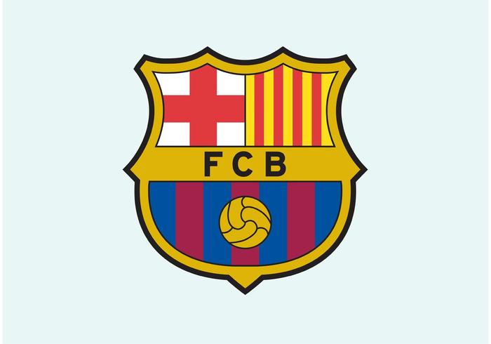

Le monde du football est dominé par des clubs historiques qui ont marqué plusieurs générations. Ces monuments du football sont connus pour leurs victoires, leur influence chez les fans de soccer ainsi que les joueurs légendaires qui ont marqué de leur empreinte leur club.
FC Barcelone
Fondé en 1899, le FC Barcelone est bien plus qu'un club (“Més que un club”). Connu pour son jeu de passes spectaculaire, le Barça a marqué l'histoire grâce à des légendes comme Messi, Xavi et Iniesta.
Palmarès :
- 5 Ligues des Champions
- 27 Championnats d'Espagne
- 31 Coupes d'Espagne
- 3 Coupes du Monde des Clubs
- 13 Supercoupes d'Espagne
Real Madrid
Fondé en 1902, le Real Madrid est le club le plus titré d'Europe. Connu pour son exigence et ses légendes comme Di Stéfano, Zidane et Ronaldo, le Real incarne la gloire et la réussite.
Palmarès :
- 15 Ligues des Champions (record absolu)
- 36 Championnats d'Espagne
- 20 Coupes d'Espagne
- 5 Coupes du Monde des Clubs
- 13 Supercoupes d'Espagne
Liverpool FC
Fondé en 1892, Liverpool est le cœur du football anglais. Son stade Anfield et son hymne “You'll Never Walk Alone” en font une légende du sport mondial.
Palmarès :
- 6 Ligues des Champions
- 19 Championnats d'Angleterre
- 8 Coupes d'Angleterre
- 9 Coupes de la Ligue
- 4 Supercoupes d'Europe
Manchester United
Créé en 1878, Manchester United est l'un des cluba les plus populaire au monde. Il a marqué les années 90 et 2000 sous Sir Alex Ferguson, avec des stars comme Cantona, Giggs et Ronaldo.
Palmarès :
- 3 Ligues des Champions
- 20 Championnats d'Angleterre
- 12 Coupes d'Angleterre
- 21 Community Shields
- 1 Coupe du Monde des Clubs
Juventus
Fondée en 1897, la Juventus de Turin domine le football italien. Connue pour sa rigueur tactique, elle a vu briller des icônes comme Del Piero, Buffon et Zidane.
Palmarès :
- 2 Ligues des Champions
- 36 Championnats d'Italie
- 14 Coupes d'Italie
- 9 Supercoupes d'Italie
- 2 Coupes Intercontinentales
AC Milan
Fondé en 1899, l'AC Milan a marqué le football européen par son élégance et son efficacité. Les années dorées avec Maldini, Kaká et Van Basten ont forgé sa légende.
Palmarè :
- 7 Ligues des Champions
- 19 Championnats d'Italie
- 5 Coupes d'Italie
- 7 Supercoupes d'Italie
- 3 Coupes Intercontinentales